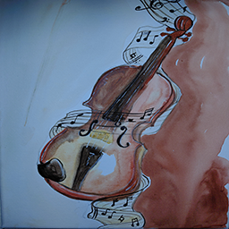
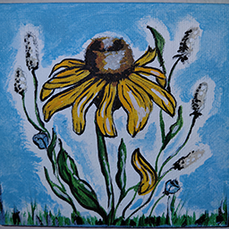
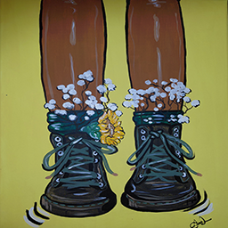
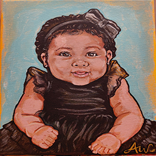

Custom Canvas Creations
Custom canvas art is where I express my emotions, memories, and personal meaning through color. Each canvas I create has a special connection to something I feel, love, or want to remember. Sometimes the inspiration comes from flowers, music, family, or a simple moment that stays in my heart and becomes part of the artwork.
Painting on canvas is also a form of healing for me. It gives me a peaceful place to slow down, think, and turn my feelings into something beautiful. When words are not enough, I can use color, shapes, and details to show what is inside of me in a creative and honest way.
Wall art is the area I am working the hardest to improve because I want each piece to become stronger, cleaner, and more meaningful. Every canvas teaches me something new about patience, creativity, and technique. With each painting, I grow as an artist and get closer to the style I want Annie’s Paint Lab to be known for.
| My Heart on The Walls | |
|---|---|
| Art & Music | |
 |
Music is one of the ways I express what I feel inside. This violin painting represents emotion, rhythm, and the beauty of creating something from the heart. Just like music, art can speak without using words. |
| Meaning: This piece shows my love for music and how sound, color, and emotion can come together on one canvas. | |
| Spring Indoors | |
 |
Flowers bring a soft and peaceful feeling into my artwork. This painting reminds me of growth, beauty, and fresh beginnings. It is my way of bringing a little bit of spring indoors, even when life feels busy or heavy. |
| Meaning: This piece represents healing, patience, and learning to bloom in my own time as I continue growing as an artist. | |
| Fun Time | |
 |
Sometimes art is about relaxing, having fun, and letting the idea take you wherever it wants to go. This shoe painting shows the playful side of my creativity. It does not have to be too serious; it just has to feel alive and make me smile. |
| Meaning: This piece reminds me that creativity should also be fun, free, and full of personality. | |
| Joy | |
 |
This painting is filled with joy, innocence, and happiness. A baby brings a special kind of light into a room, and I wanted this piece to capture that sweet feeling. It is soft, meaningful, and full of love. |
| Meaning: This piece represents happiness, family, and the beautiful memories that make a house feel warm and full of life. | |
Annie’s Paint Lab is my colorful and creative space where art, personality, and everyday life come together. This site shares the things I love most, including wearable art, wall art, travel, family, friends, food, cats, flowers, music, and meaningful memories. Each page shows a different part of my creative world and helps visitors understand what inspires my work. From painted hats, shirts, pants, and tote bags to emotional canvas pieces inspired by music, flowers, joy, and healing, my art is personal and full of heart. My designs are not just decorations or clothing pieces; they are expressions of who I am, what I love, and how I connect with the people around me.
Overall, Annie’s Paint Lab is about turning simple ideas into something special. Whether someone wants a custom gift, a fun wearable design, or a meaningful canvas for their wall, I bring creativity, care, and personality into every piece. This site welcomes visitors into my world and invites them to imagine what beautiful custom art we could create together.